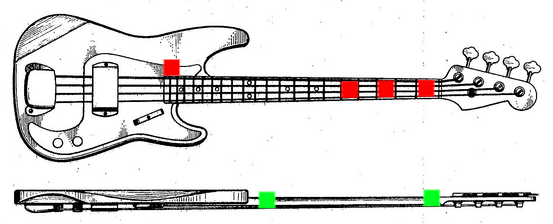
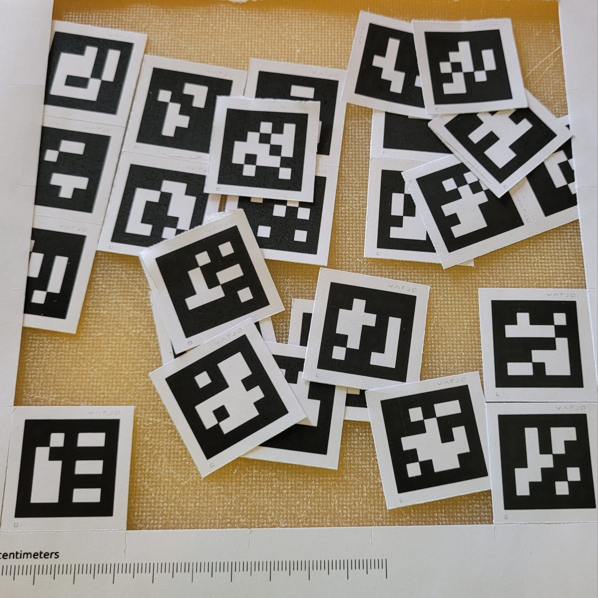
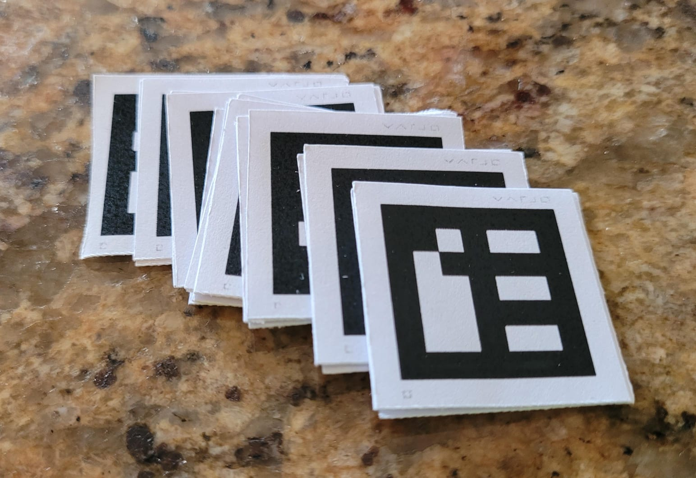

Durante la discussione del progetto si era discusso di utilizzare il tracciamento di oggetti, feature di Unity AR Foundation che permette di tracciare la posizione di un oggetto nell'ambiente reale e accoppiarlo ad una sua controparte in Unity. A quanto pare, per il momento questa feature e' disponibile solo su alcuni dispositivi Apple.
In mancanza di questa feature sul visore utilizzato (Varjo XR-3), ho scelto di pianificare l'esplorazione delle feature specifiche dell SDK Varjo per Unity (possibilmente anche di alcune features disponibili su tutte le implementazioni di Unity).
Ho individuato i Varjo Markers come una buona alternativa al tracciamento di oggetti basato su mesh, il loro pregio e' l'indipendenza dal modello specifico di strumento utilizzato dall'utente, mentre un difetto potrebbe essere la necessita' di applicazione allo strumento dei marker su superfici piatte (la documentazione specifica che l'applicazione a superfici curve potrebbe diminuirne l'accuratezza di tracciamento, questo esclude la possibilita' di applicarli al manico dello strumento.
Alcuni dei punti dove penso sia utile e pratica l'applicazione dei marker potrebbero essere i seguenti (in rosso): I punti in verde sarebbero adirittura migliori, dal momento che localizzerebbero in modo ancora migliore i punti di inizio e 12esimo fret (la cui posizione e' importante in quanto rappresenta il punto a meta' tra inizio e fine delle corde, ma il loro tracciamento con marker potrebbe risultare difficile vista la curvatura del manico.
I punti individuati dovrebbero permettere un applicazione in generale alla gran maggior parte dei modelli di strumenti.
In vista dell'attivita' di lunedi' ho stampato e ritagliato dei marker di dimensione 2,5 cm, la cui visibilita' ottimale dovrebbe spaziare tra i 50 cm e 1m, penso sia una distanza adeguata per l'uso.
 Esiste anche come possibilita' il tracciamento di immagini in Unity AR Foundation, che potrebbero essere utilizzate in concomitanza con i Varjo Markers per tracciare elementi del design dello strumento come i marcatori di posizione sul lato del manico, i tasti perpendicolari alle corde e le corde stesse.